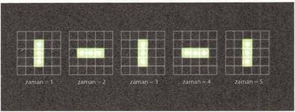
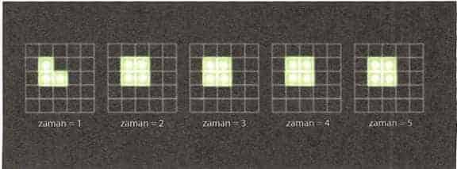
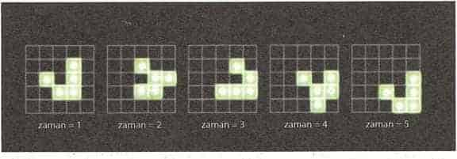

B
u kitapta Güneş, Ay ve gezegenler gibi astronomik cisimlerin hareketlerindeki düzenliliğin Tanrıların veya şeytanların heves veya kaprislerine göre değil, sabit yasalara göre yönetildiğini açıkladık. Başlangıçta bu yasalar sadece astronomi (veya astroloji, o zaman ikisi aynı kabul ediliyordu) içinde fark edilebildi. Dünya üzerindeki şeylerin davranışları öyle karmaşıktı ve o kadar çok etki tarafından belirleniyordu ki, ilk uygarlıklar bu fenomenleri yöneten açık bir model veya yasa olduğunu fark edemediler. Yine de yavaş yavaş, astronomi dışındaki alanlarda yeni yasalar keşfedildi ve bu durum bilimsel determinizme yol açtı: Verili bir zamanda evrenin daha sonra nasıl gelişeceğini belirleyen bir yasalar dizisi olmalıydı. Bu yasalar her yerde ve bütün zamanlarda geçerli olmalıydı, yoksa yasa olmazlardı. Herhangi bir istisna veya mucize olamazdı. Tanrılar veya şeytanlar evrenin işleyişine karışamazlardı.
Bilimsel determinizm ilk ortaya atıldığında bilinen yasalar yalnızca Newton’ın hareket ve çekim yasalarıydı. Bu yasaların Einstein’ın genel görelilik kuramında nasıl genişletildiğini, evrenin diğer özelliklerini yöneten diğer yasaların nasıl keşfedildiğini anlattık.
Doğanın yasaları bize evrenin nasıl davrandığını anlatır, ama niçin öyle davrandığını anlatmaz; kitabın başında şu soruları sormuştuk:
Niçin hiçlik değil de varlık var?
Niçin varız?
Niçin başka yasalar değil de bu bildiğimiz yasalar var?

Çakar Hayat Oyunu'nda basit türde birleşik nesnelerden biri.
Bazıları bu sorulara yanıt olarak, Tanrı öyle tercih ettiği için evreni bu şekilde yarattı diyebilir. Evreni kimin veya neyin yarattığını sormak mantıklıdır, ancak yanıt Tanrı ise, Tanrı’yı kim yarattı diye sormak gerekecektir. Bu bakış açısına göre yaratıcıya ihtiyaç duymayan bir varlık söz konusudur ve bu varlık Tanrı’dır. Bu, Tanrı’nın varlığı ile ilgili ilk-neden tartışması olarak bilinir. Bize göre yine de bu soruları tümüyle bilimsel alan içinde, herhangi bir ilahi varlığa başvurmadan yanıtlamak mümkündür.
3. bölümde anlattığımız modele dayalı gerçekçiliğe göre beynimiz dış dünyanın bir modelini yaratarak duyu organlarımızdan gelen verileri yorumlar. Evlerimiz, ağaçlar, diğer insanlar, duvarlardaki prizlerden akan elektrik, atomlar, moleküller ve diğer evrenler hakkında zihinsel kavramlar oluştururuz. Bilebileceğimiz tek gerçeklik bu zihinsel kavramlardır. Gerçekliğin modelden bağımsız olarak sınanması mümkün değildir. İyi yapılandırılmış bir model kendi gerçekliğini yaratır. Gerçeklik ve yaratılış gibi konularda düşünmemize yardımcı olabilecek bir örnek 1970’te, Cambridge’de genç bir matematikçi olan John Conway tarafından geliştirilmiş Hayat Oyunu’dur.

Cansız doğaya doğru evrim Hayat Oyunu'ndaki bazı birleşik nesneler kuralların asla değişemeyeceklerini söylediği bir biçime doğru evrilirler.

Planörler Planörler ara şekillerden geçerek şekil değiştirirler ve sonunda çapraz hat üzerinde bir kare aşağıda orijinal biçimlerine geri dönerler.
Hayat Oyunu’ndaki “oyun” sözcüğü yanıltıcıdır. Oyunda kazanan veya kaybeden yoktur; aslında oyuncular da yoktur. Hayat Oyunu gerçekten bir oyun değildir; iki boyutlu bir evreni yöneten bir dizi yasadan oluşur. Bu deterministik bir evrendir: Bir kez başlangıç yapısını veya ilk konumunu oluşturduktan sonra yasalar gelecekte neler olacağını belirler.